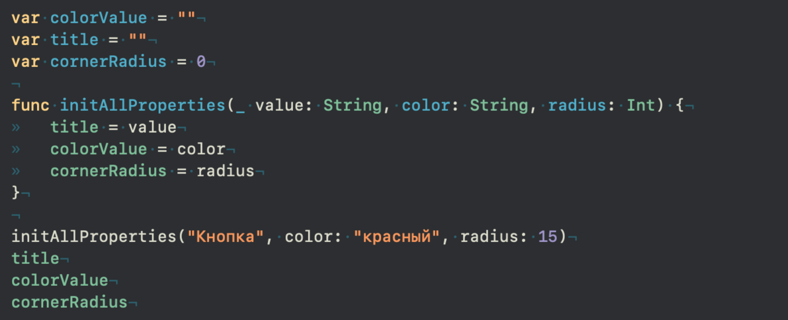

Урок 21. Инициализаторы Класса.
11 Апреля 2023

Загрузить материалы к уроку.
Инициализация свойств.
Прежде чем понять что такое инициализаторы, нам необходимо вспомнить такое понятие как Инициализировать свойство – присвоить значение свойству в момент его создания. ✍инициализация свойств
Прежде чем работать со свойством мы обязаны его инициализировать, либо сделать Опциональный тип – это специальный тип данных в языке Swift, который может содержать либо значение, либо отсутствие значения (nil). Они обозначаются знаком вопроса после типа данных (например, Int?). Это позволяет вам проверять наличие значения перед использованием и избегать возникновения неожиданных ошибок. ✍опциональным, то есть мы не cможем написать следующим образом:
При запуске, этот код выдаст ошибку, которая будет гласить: “Constant ‘numberOne’ used before being initialized”, то есть мы пытаемся использовать свойство до его инициализации, до того момента как мы зададим ему какое то значение. В память мы помещаем только то что содержит значение, если значения нет, то это просто зарезервированная область. Мы могли бы сделать его опциональным:
В таком случае мы можем использовать свойство, но обязаны извлечь из него опциональное значение, я здесь использую Самый быстрый и простой способ это задать значение по умолчанию и делается это следующим образом: более подробно можно почитать в 14 уроке. ✍значение по умолчанию.
Обратите внимание, что опциональное свойство необходимо сделать переменной, потому что оно содержит в себе заглушку в виде nil, то есть можно сказать у него уже есть значение, и оно равно nil, а если у константы уже есть значение, то мы не можем его менять, и свойство навсегда останется со значением nil. Поэтому система выдает ошибку, и говорит нам что необходимо либо задать какое то начальное значение, либо сделать свойство переменной, что бы была возможность задать значение по умолчанию, при извлечении опционального значения: numberOne ?? 0.
Проще говоря не инициализированное опциональное свойство всегда должно быть переменной.

Мы наконец подошли к сути вопроса.
Инициализаторы класса.
Внутри классов точно так же мы не можем создать не инициализированные свойства. Следующий код выдаст нам ошибку:
Система попросит нас задать либо начальные значения, либо сделать свойства опциональными, либо добавить инициализатор.
Если с первым и вторым все понятно, то что же такое эти инициализаторы? Прежде чем в этом разобраться давайте вспомним пример из прошлого урока, где мы задавали значения для свойств внутри класса, используя созданный нами метод:
Когда будет вызван этот метод, система возмёт переданное в параметр значение value и передаст его в title, свойство класса:
Прежде чем читать дальше, ответьте на вопрос: Чему будет равен title в экземпляре класса button?
title будет иметь значение “Кнопка”, если вы ответили на вопрос верно, то можете смело двигаться дальше.
Давайте теперь увеличим количество параметров в методе и переиспользуем все свойства класса (зададим новые значения для свойств):
Проанализируйте код и снова ответьте на вопрос, какие значения будут содержать свойтсва title, color и cornarRadius?
Думаю вы все ответили на вопрос верно, но если все таки запутались, ловите пояснение:
Давайте на минуту забудем что такое класс, и выполним тот же самый код в не класса:
Чему будут равны свойства title, colorValue и cornerRadius? Ответ очевиден, после вызова метода, свойства приобрели новое значение, которые мы передали в параметры функции:
С классом обстоят дела точно так же, только что бы обратится к методу и свойствам, нам необходимо создать экземпляр класса.
Обратите внимание что self для свойства color уже не будет работать, потому что self это сам класс, а здесь класса у нас нет, поэтому мы вынуждены придумать другое название, что бы системе было понятно к чему мы обращаемся и во что передаем значения.
Наконец вы готовы к тому что бы узнать что же такое инициализаторы.
Инициализаторы – это методы, которые вызываются при создании нового объекта класса. Они могут принимать параметры, которые передаются при создании объекта, и использовать их для установки начальных значений свойств класса.
Теперь вы знаете что это методы, который вызывается в момент создания объекта класса. Имя такого метода init, и выглядит он следующим образом:
Как вы можете заметить у него нет ключевого слова func, есть только скобки для параметров и фигурные скобки для кода. Этот метод есть у каждого класса по умолчанию и он вызывается в момент создания экземпляра класса.
Давайте посмотрим на вызов этого метода:
Но есть возможность не писать имя метода, а сразу использовать круглые скобки:
И в первом и во втором случае мы вызываем метод init, просто в последнем варианте запись короче и все используют ее.
Вторая запись вам уже знакома и теперь вы понимаете откуда появились эти круглые скобки, это по сути параметры метода, который мы вызываем.
В данном примере init уже есть в классе по умолчанию init() {} и нам нет необходимости его прописывать.
Если init вызывается при создании экземпляра класса, в таком случае мы можем что-нибудь сделать в момент создания класса, давайте выведем значения свойств класса на консоль:
В тот момент когда мы создаем экземпляр класса buttonTwo будет вызван метод init, внутри которого мы распечатываем значения наших свойств: Красная, Кнопка, 15:
Метод init можно воспринимать как надзирателя, который следит, чтобы все свойства внутри класса были инициализированны, то есть имели какие то значения.
Eсли init это метод, то значит у него могут быть параметры, давайте через его параметр зададим значение для свойства title:
Теперь ответьте на вопрос, какое значение будет у свойства title экземпляра класса buttonTwo?
Все верно, title имеет теперь значение “Кнопка”. Обратите внимание что изначально свойство в качестве значения имело пустую строку.
Благодаря методу init мы можем производить первую инициализацию свойств в самом методе, то есть нам нет необходимости задавать начальное значение для свойства title:
В таком случае компилятор не будет выдавать нам ошибки, потому что инициализация свойства под чутким контролем метода init, мы просто не сможем создать экземпляр класса без инициализации свойства title.
Давайте все свойства инициализируем, используя инициализатор:
В таком случае все свойства класса обязательны для инициализации, и мы не сможем создать экземпляр класса без вызова этого инициализатора:
Напомню! Использование self внутри инициализатора необходимо что бы была возможность создавать одинаковые имена, таким образом компилятору понятно какое свойство к чему относится. В инициализаторе лучше всегда использовать созвучные имена со свойствами класса, это позволит вам не запутаться.
Более подробно о том что такое self, и чем оно отличается от Self мы рассмотрим на одном из уроков в дальнейшем.
Нам осталось передать какие то значения в каждый из параметров:
Прежде чем продолжить ответьте на вопрос, какие значения будут у свойств title, color и cornerRadius экземпляра класса button?
Таким образом мы можем создавать разные экземпляры класса и при создании сразу инициализировать свойства нужными значениями.
Несколько инициализаторов
В разработке бывают случаи, когда одного инициализатора может быть не достаточно, и у нас есть возможность создать столько инициализаторов, сколько нужно.
Давайте рассмотрим следующий пример:
У нас есть дополнительный класс, который в себе содержит нужную нам информацию, и мы бы хотели иметь возможность инициализировать свойства класса Button значениями свойств класса Theme.
Для этого мы можем создать еще один инициализатор:
Обратите внимание, что у класса Theme мы не прописываем ни какого инициализатора, он нам доступен по умолчанию init() так как все свойства инициализированы.
Этот код выдаст ошибку. Остановитесь на этом моменте и подумайте почему так произошло.
Все дело в том, что при создании экземпляра класса мы не можем вызвать два инициализатора одновременно, либо один либо другой. А это значит что если мы захотим воспользоваться вторым инициализатором, то мы попытаемся создать экземпляр класса с не инициализированным свойством title, как вы уже знаете система нам не даст этого сделать, все свойства на момент создания экземпляра класса обязаны быть инициализированными, давайте добавим это свойство в инициализатор:
В таком случае никаких ошибок больше не будет, потому что каждый из инициализаторов позаботился о том что бы все свойства были инициализированны, и мы смело можем создать экземпляр класса с любым из инициализаторов:
Если мы добавим третий инициализатор, то он так же появится в этом списке.
Давайте создадим экземпляр класса с новым инициализатором:
Сперва мы создаем экземпляр класса Theme, и далее передаем его в параметр theme. Остановитесь и снова ответьте себе на вопрос, какие значения будут у свойств color, title и cornerRadius экземпляра класса customButton?
Сперва мы создаем экземпляр класса Theme, и далее передаем его в параметр theme. Остановитесь и снова ответьте себе на вопрос, какие значения будут у свойств color, title и cornerRadius?
Так как init это тот же метод, только системный, то в нем мы так же можем использовать значения по умолчанию, что сделает нужные нам параметры не обязательными.
Мы так же можем создать пустой инициализатор, внутри которого задать значения по умолчанию:
в параметры инициализатора остаются пустыми, а вот в теле метода, мы задаем все начальные значения для свойств, теперь при вызове этого инициализатора мы получим сформированный экземпляр класса. И снова ответьте себе на вопрос: Какие значения будут у свойств color, title, cornarRadius экземпляра класса defaultButton?